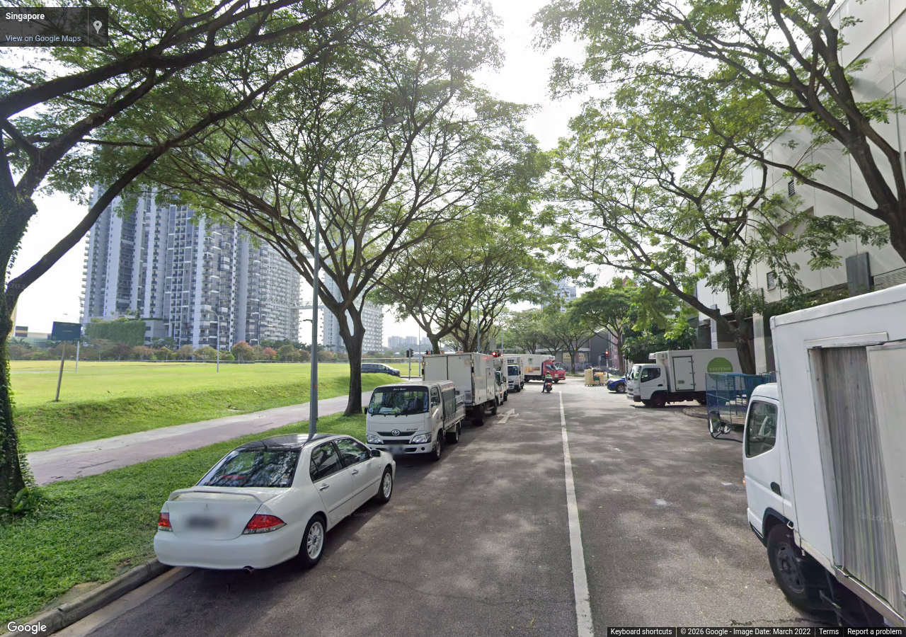
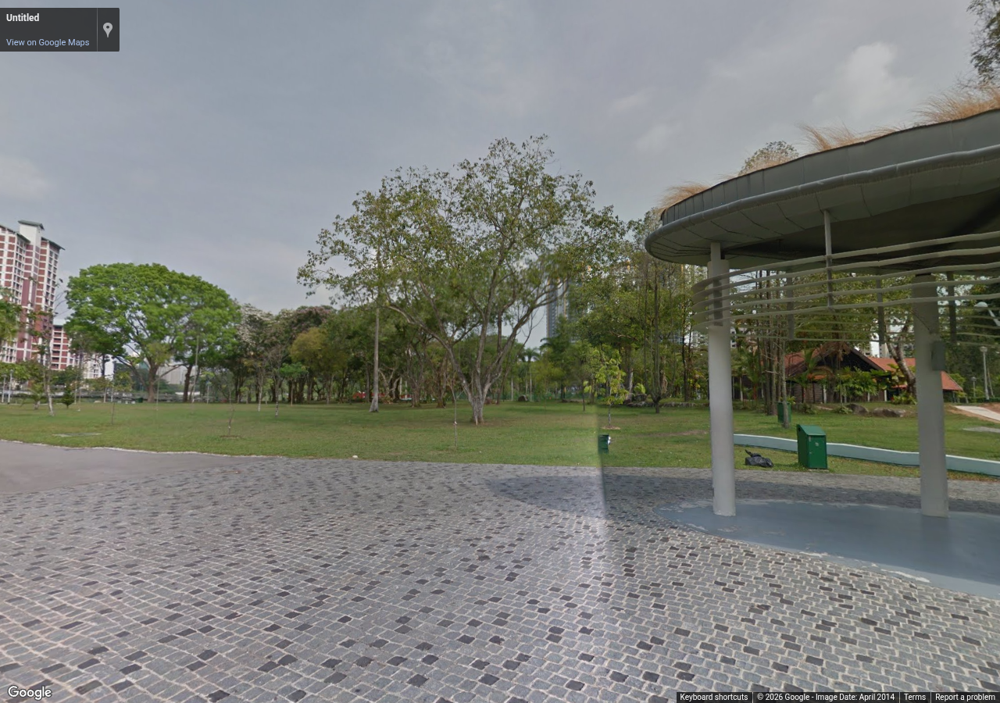

Source 2022-03, heading 90°, pitch 5°, zoom 1. Metadata / review

Source 2014-04, heading 310°, pitch 5°, zoom 1. Metadata / review
Authorized reference screenshots. Attribution retained. Open full-size images to review clarity; capture success alone is not visual acceptance.

